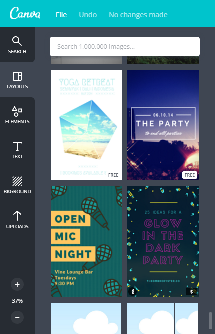
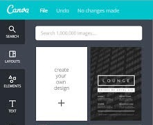
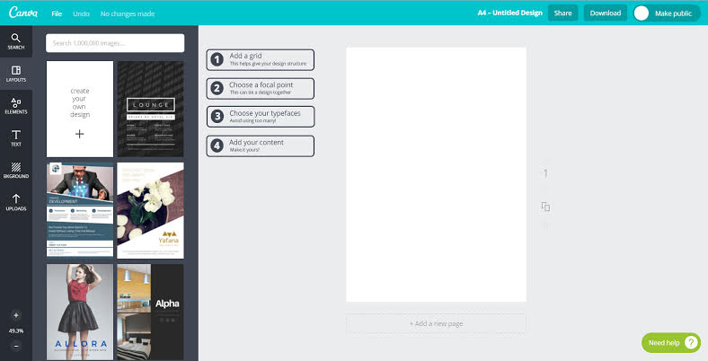

Canva: A Short Usability Review
Canva is a fantastic process that democratizes visual design, a very useful tool for people who want to design, but aren’t designers by trade. While there’s a fantastic suite of tools in the app for people to use, do they know how to use them? This weekend, I decided to find out if Canva can provide a better experience to their users by helping them create the designs that they want.
Finding Insight
I started by performing a usability review of Canva with an occasional user who had difficulty pulling together designs in the past. The participant had previously tried to use Canva to create a poster of motivational quotes, but because the participant couldn’t find a composition they were satisfied with, they had given up.
During the contextual inquiry, I asked the participant to try and recreate the project to see if they could complete it a second time around. One of the things that the user expressed frustration with was that when none of the templates matched their idea, it was difficult to create a cohesive design when they tried to start from scratch.
“That’s the problem, at least for me, if you just present me with a blank canvas I have no idea where to start and anything I do looks… ugly”
While the user had a specific problem -- difficulty implementing a text-heavy design -- it speaks to the universal difficulty that users have finding direction when they try to create designs from scratch. This leads us to define the problem;
Canva is extremely effective at allowing non-designers to create beautiful designs from templates, but users have difficulty in creating original designs, especially when it comes to composition and choosing harmonious elements.
Creating a Solution
Canva’s Design Schools blog aims to empower with people with knowledge of design theory and how to use the Canva app. However, users’ goals differed:
“As far as I’m concerned I just want a pretty looking picture, I don’t wanna know colour theory, I don’t wanna know typography and I don’t wanna know all the basics of design - I just wanna make something quick that looks nice”
If this tremendous design knowledge could be incorporated into the app itself, and appear for the user when they needed it, then Canva could better cater to its users. This led to developing three distinct solutions aimed at assisting users who wanted to deviate from the standard template options offered, but who also weren’t experienced enough to begin creating a design from scratch.
Two paths - Template or Your Own Design?
The participant felt that the grid options were useful since it gave them a base to start from, which mitigated the feeling of having to start from a blank slate, and gave them some direction.
However, they mentioned that they had not been aware a “grid” option existed for making documents from scratch. Since the specific grid option was listed under the ‘elements’ menu rather than ‘layouts’, there was potential for confusion.
Grids were only visible in the layouts menu after the user scrolled through several pages of templates, creating the possibility the user may never find the grids
Asking the user at the outset if they’d like to use a template, or to start from scratch, and then guiding them through a series of steps - such as in the image below, can assist in giving the users a framework they can build their design on and remove that sense of directionlessness.
Contextual Assistance
Canva’s Design School blog contains a wealth of information about design theory and good design. It’s a fantastic resource, but because it’s located outside of the Canva web app, having to look something up on the blog can break the user’s creative flow.
One possible solution could be to have this knowledge available contextually while the users are designing. For example, if the user has selected a font for the header, Canva could suggest an appropriate typeface to complement it. These suggestions could be turned off so as not to annoy more advanced users.
In the interactive example below, if the user were to add a heading with the font Pacifico, when they went to add the body text a tooltip could appear suggesting an appropriate typeface for the body.